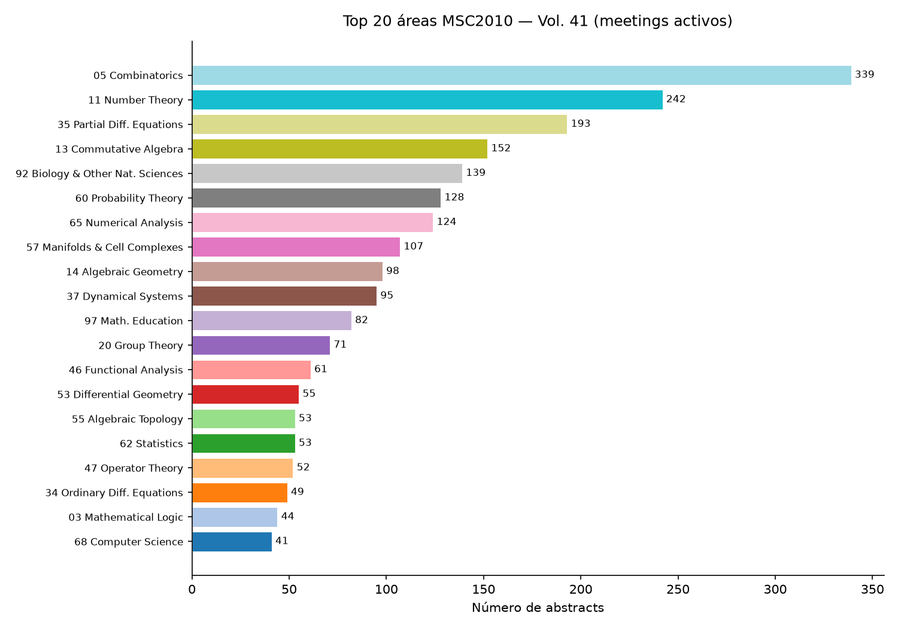
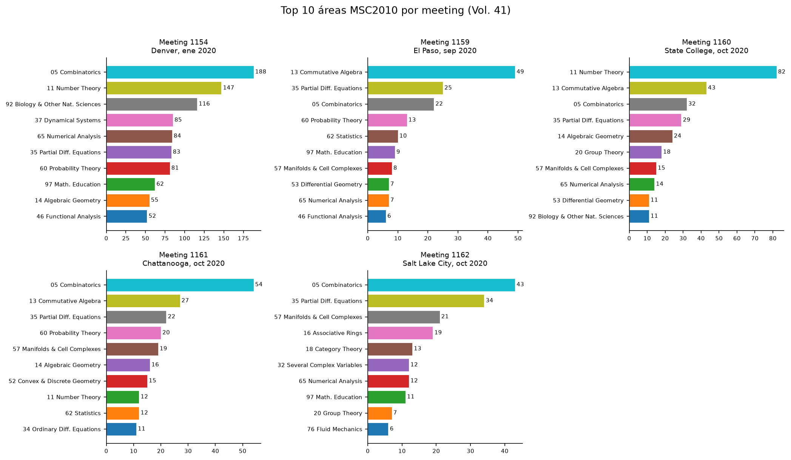
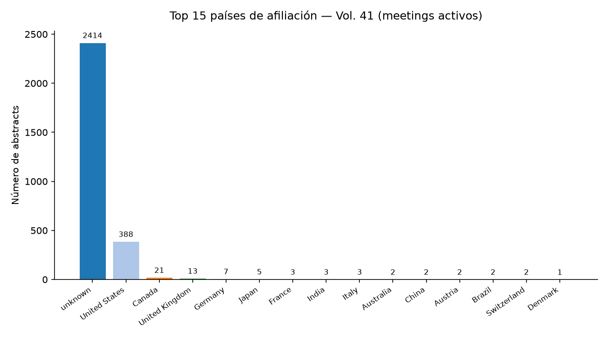
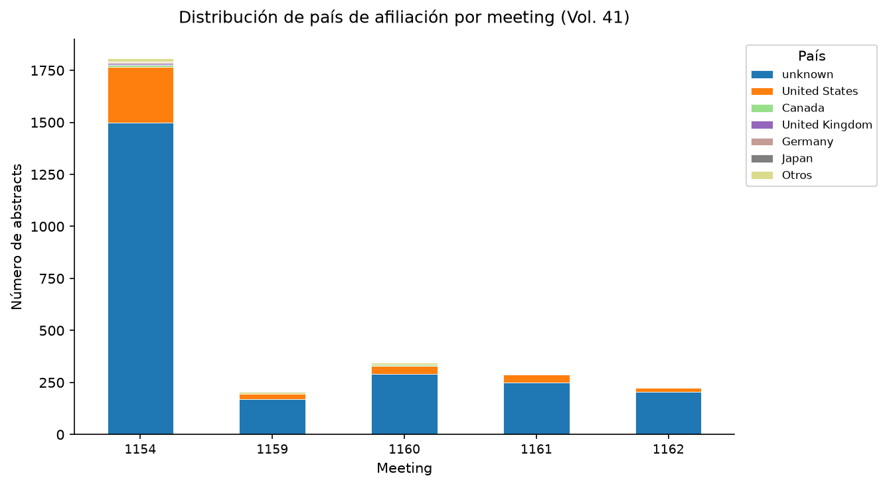
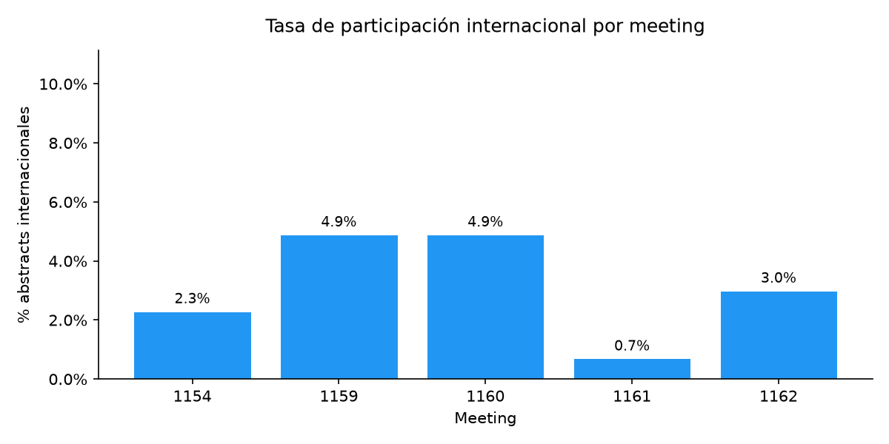
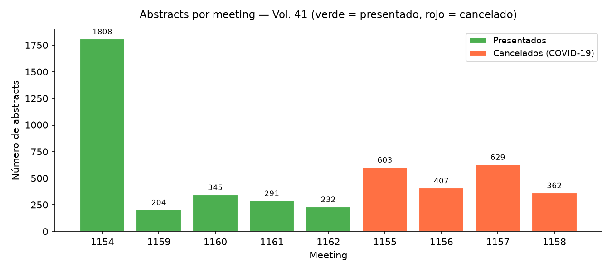
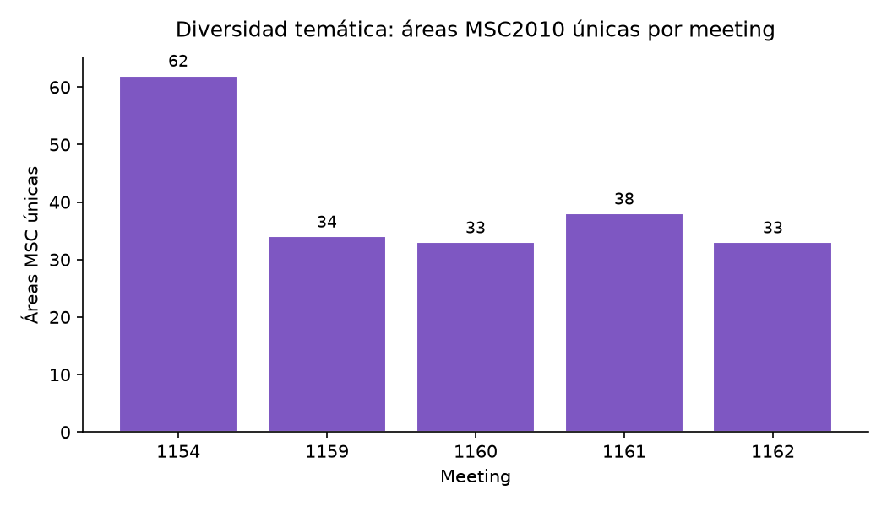

Indicadores
2,880
Abstracts en meetings activos
(meetings 1154, 1159–1162)
(meetings 1154, 1159–1162)
2.7%
Participación internacional
(afiliación fuera de EE. UU.)
(afiliación fuera de EE. UU.)
26.9%
Concentración en Top-3 MSC
(meetings activos, consolidado)
(meetings activos, consolidado)
Meetings analizados
| Meeting # | Nombre | Lugar | Fechas | Abstracts | % Intl. | Top-3 MSC | Estado |
|---|---|---|---|---|---|---|---|
| 1154 | Joint Mathematics Meetings | Denver, CO | 15–18 ene 2020 | 1808 | 2.3% | 24.9% | |
| 1155 | Spring Eastern Sectional | Charlottesville, VA | 13–15 mar 2020 | 603 | — | — | Cancelado COVID-19 |
| 1156 | Spring Eastern Sectional | Medford, MA | 21–22 mar 2020 | 407 | — | — | Cancelado COVID-19 |
| 1157 | Spring Central Sectional | West Lafayette, IN | 4–5 abr 2020 | 629 | — | — | Cancelado COVID-19 |
| 1158 | Spring Western Sectional | Fresno, CA | 2–3 may 2020 | 362 | — | — | Cancelado COVID-19 |
| 1159 | Fall Central Virtual Sectional | El Paso, TX (virtual) | 12–13 sep 2020 | 204 | 4.9% | 47.1% | |
| 1160 | Fall Eastern Virtual Sectional | State College, PA (virtual) | 3–4 oct 2020 | 345 | 4.9% | 45.5% | |
| 1161 | Fall Southeastern Virtual Sectional | Chattanooga, TN (virtual) | 10–11 oct 2020 | 291 | 0.7% | 35.4% | |
| 1162 | Fall Western Virtual Sectional | Salt Lake City, UT (virtual) | 24–25 oct 2020 | 232 | 3.0% | 42.2% |
Hallazgo principal
La JMM Denver 2020 (meeting 1154) concentró el 10.4% de sus abstracts en el área 05 Combinatorics y registró una participación internacional del 2.3%. En contraste, los meetings virtuales post-COVID (1159–1162) mostraron su mayor concentración en 05 Combinatorics (14.1%) con una tasa internacional del 3.4%.
Gráficos







Limitaciones
- La afiliación analizada corresponde al bloque de texto del abstract completo, no necesariamente a cada autor por separado. Cuando hay múltiples autores con distintas instituciones, el país asignado refleja la afiliación más prominente en el texto.
- La detección de país es heurística (reglas + abreviaturas de estados de EE. UU. + palabras clave). El 83.7% de los abstracts (4084) quedó clasificado como unknown.
- Los abstracts de los meetings 1155–1158 aparecen publicados en el volumen 41 pero no fueron presentados (reuniones canceladas por COVID-19). Están excluidos de todos los indicadores y gráficos, pero se incluyen en la tabla.
- pypdf extrae texto plano sin estructura de columnas. Fórmulas LaTeX y caracteres especiales pueden fragmentar nombres, afiliaciones o títulos.
- El volumen 41 cubre exclusivamente el año 2020. Los resultados no son comparables con otros volúmenes sin normalizar por número de meetings y sesiones.
- 19 abstracts no tienen fecha “Received” parseable.